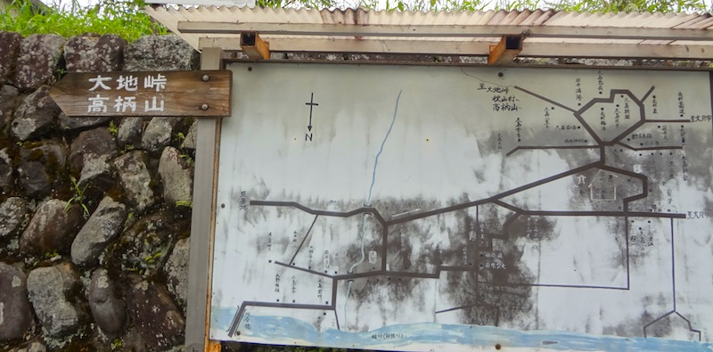
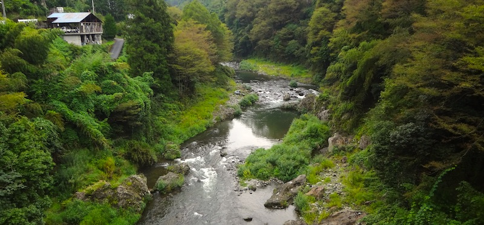
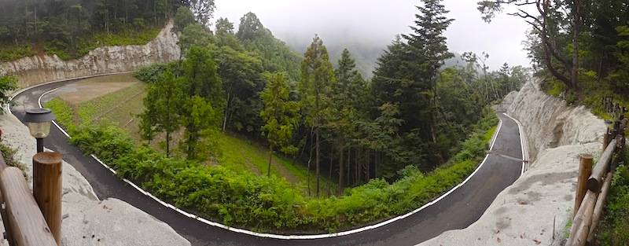
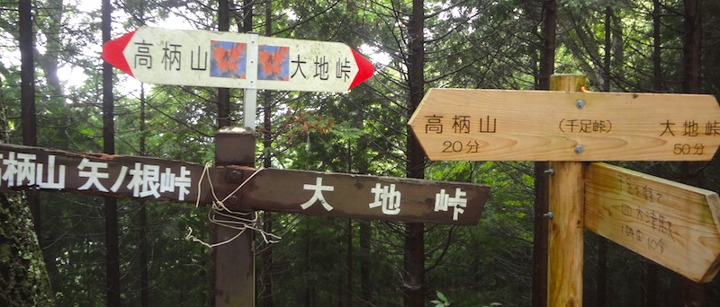
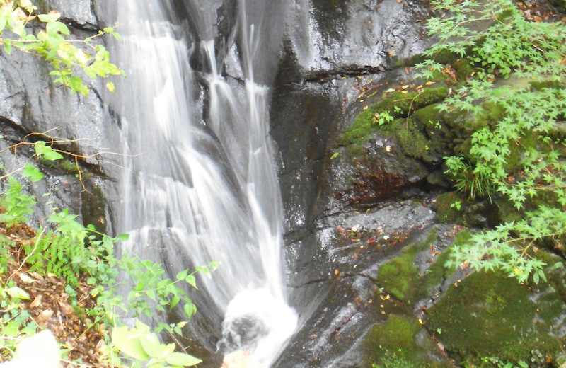

Starting Point
Shiotsu Station on the Chuo Line.
Points of Interest
- Cedar Forest (杉林）
- Katsuragawa River（桂川）
- Nice Views of Shiotsu River Valley and nearby mountains
- Mt. Takatsuka（高柄山）(optional)
Course
This is a pleasant, well-marked course.
Go out the (only) exit of Shiotsu Station and turn left. Go down a short ramp, and turn left, walking through a tunnel which goes under the train tracks. After passing through the tunnel, turn left on the small street. After walking for a minute or two, there will be a sign for Mt. Takatsuka (高柄山）pointing you to the right. Turn right and you will reach the Katsuragawa River after a few minutes.

Right before the bridge (going over the river), there’s a small shed on your right, with a path behind it which leads down to the river. The river is a wonderful place to take a dip and cool off during the hot season - cool, clean, and refreshing water. Since this course finishes off near this point, you can take a swim at the end of the course as well.

Continuing on with the course, cross over the bridge and walk on the road for about 20-30 minutes. There will be signs for Mt. Takatsuka (高柄山）and Oochitoge (大地峠) which lead you onto a hiking course. This course takes you through beautiful cedar forests and is well-marked. After an hour or so, the hiking course follows a road for some time, and then crosses the road at a couple of points. There are signs every time you hit the road pointing which way to go to get back onto the hiking path.

After passing this road area, continue on for about 40 minutes, continuing ups and downs (mostly ascending), until you reach another sign which points to Mt. Takatsuka (高柄山）(going straight), or Shiotsu Station (四方津駅）to the left. Here you have the option to walk up to Mt. Takatsuka (20 minutes up and 15 minutes back), where you have nice views of the surrounding area (and Mt. Fuji if you’re lucky), or you can take the path going down to Shiotsu Station.

The course from this point is quite steep for about 40 minutes, where it evens out and follows a small creek, ending into a road, which continues following the creek for about 40 minutes. There are some scenic spots along the creek with the water flowing over the rocks, and a few small waterfalls.

The road comes to a bridge which goes over the Katsuragawa River (downstream from the bridge which you first crossed at the beginning of the hike) and takes you through some rice fields. Right before the train tracks, you turn left (don’t go through the small tunnel which goes under the tracks) - there is a sign there pointing to Shiotsu Station - and follow the tracks about 10 minutes, where you’ll come to the sign which you saw in the beginning of the hike which takes you down to the river. Here, you can go back to the station, or go down to the river for a refreshing dip.